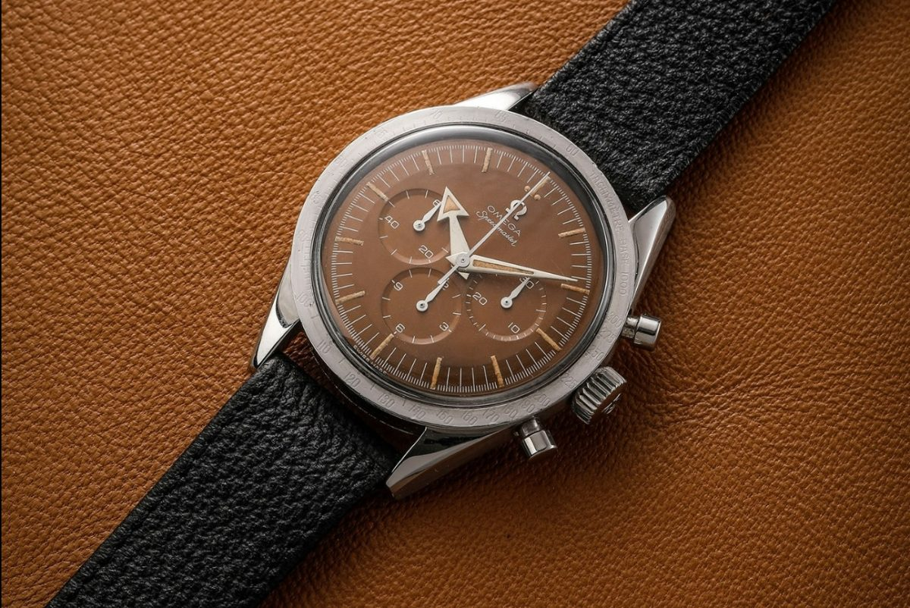
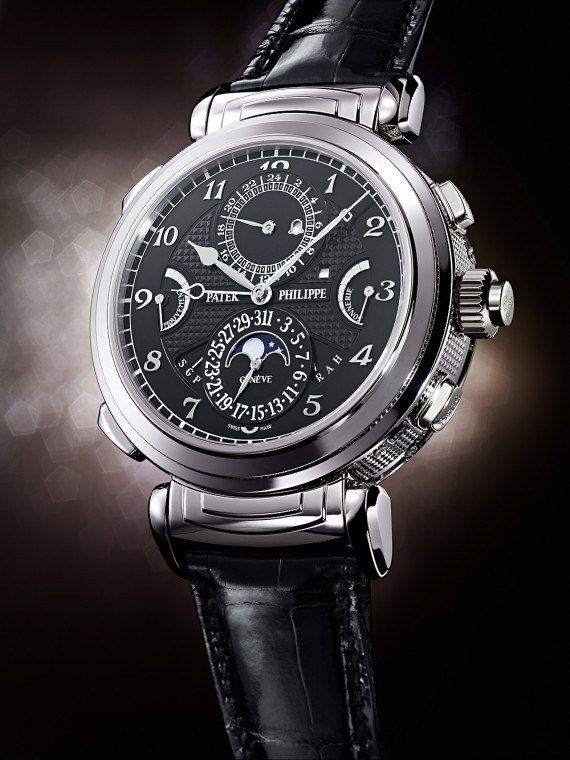
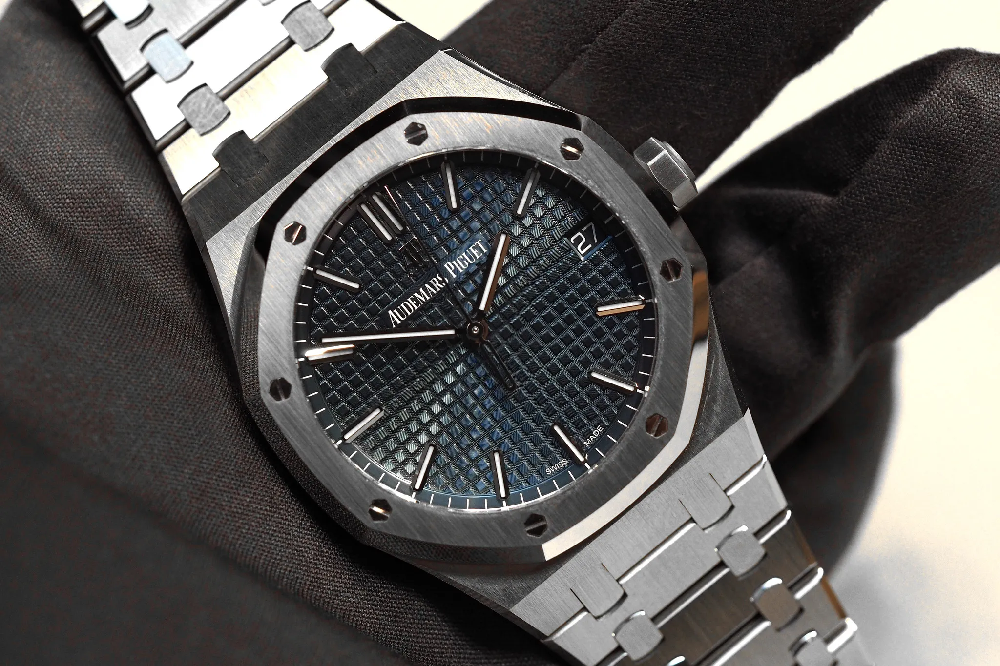
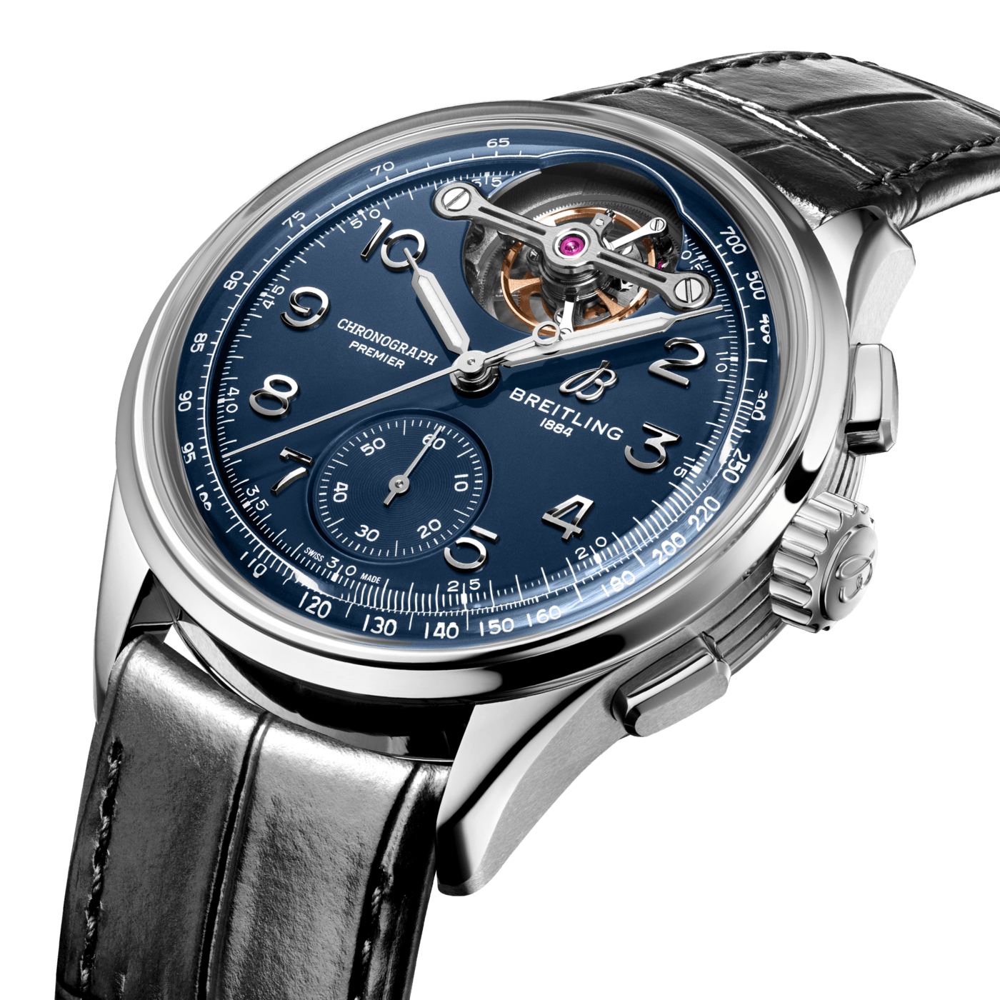
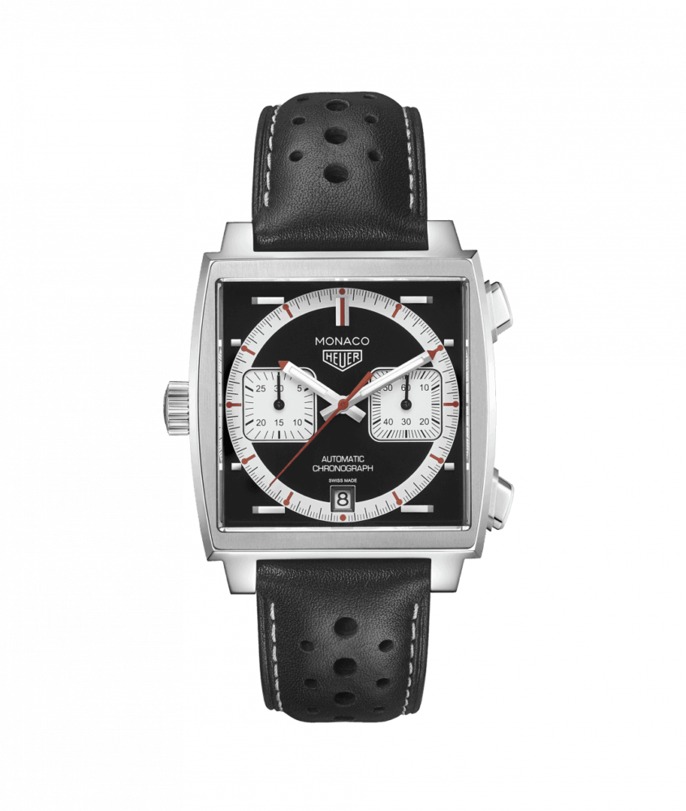
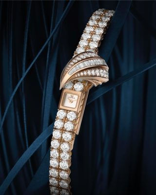

.jfif)
Rolex Daytona("Paul Newman")
El rolex más caro reloj alguna vez vendido es un "Paul Newman" Rolex Daytona que pertenecía al reconocido actor cuyo apodo lleva, subastado para € 17.8 millones en 2017.

Omega Speedmaster CK29151
El reloj Omega Speedmaster CK2915-1 es ya el reloj más caro de la historia de la firma tras haber sido subastado por 3,1 millones de francos suizos (unos tres millones de euros) en la subasta benéfica relojera Only Watch. Fue un comprador chino quien batió a otros pujadores.

Patek Philippe Grandmaster Chime
El récord actual entre los relojes de lujo lo tiene el Patek Philippe Grandmaster Chime Ref. 6300A-010 por 31,194 millones de dólares, subastado en Christie’s en Ginebra en 2019. Si busca un reloj que le encante, debería hacerse con un reloj Patek Philippe.

Audemars Piguet Royal Oak
En la actualidad, el reloj más caro de la firma suiza es el Audemars Piguet Royal Oak Grande Complication con un valor de unos 825 mil euros aproximadamente.

Breitling Premier B21 Chronograph Tourbillon 42
El reloj Breitling más caro actualmente disponible es el Premier B21 Chronograph Tourbillon 42 Willy Breitling, que lleva el nombre del famoso fundador de la marca. Forma parte de la serie Premier Tourbillon, dirigida a los amantes de la relojería.

IWC Gerald Genta
Los precios de estos ejemplares sin estrenar oscilan entre los 8200 € y los 9300 €; de segunda mano cuestan alrededor de 7300 €.

Tudor Big Crown Submariner
La profundidad maxima de inmersion funcional, establecida inicialmente en los 100 metros, alcanzo los 200 con la introduccion de la referencia 7924 en 1958.

Tag Heuer Monaco V4
El TAG Heuer Monaco V4 de platino con correa es el reloj más caro de la colección, disponible por unos 72.5000 euros. Si hablamos de precios en la colección de TAG Heuer.

Jaeger-LeColutre-Joaillerie
El Jaeger-LeCoultre-Joaillerie, tiene un costo de 26 millones de dólares. A pesar de parecer una pulsera en ella esconde un reloj. Y es que, como ya se ha mencionado, tiene el récord por ser el movimiento mecánico más pequeño del mundo.

Hunlot MP-05 LaFerrari
El reloj Hublot MP-05 LaFerrari es considerado el más costoso de la historia. Este reloj sorprende por su complejidad y originalidad, con un diseño que se asemeja a los detalles técnicos del motor de un automóvil Ferrari.